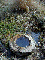
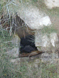
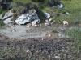
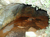

Vous êtes sur http://perso.wanadoo.fr/martine.bruhat
Sur plus de
600
sources minérales en Auvergne seules
16
sont salées et accueillent une flore et une faune normalement rencontrées au bord de la mer.
Patrimoine d'intérêt européen ces milieux salés constituent des espaces naturels à protéger absolument.
(Informations recueillies sur panneaux et livret du
Conservatoire des espaces naturels en Auvergne
)



Sources salées dans le Puy de Dôme. La mer au pied des volcans !
Choisissez-en une et cliquez sur
! vous verrez celles que j'ai photographiées.
